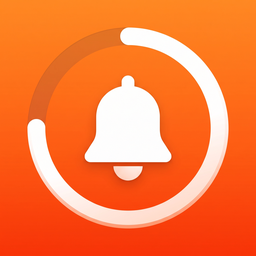

TeneffüsSon güncelleme: 23 Ekim 2026
Bu metin, Teneffüs uygulamasının ("Uygulama") verilerinizi nasıl ele aldığını ve 6698 sayılı Kişisel Verilerin Korunması Kanunu ("KVKK") kapsamındaki haklarınızı açıklar.
Yasin Yel — yasinyel32@gmail.com
Uygulama hiçbir kişisel veri toplamaz. Hesap açma, giriş yapma, analiz aracı, reklam veya takip yoktur. Uygulamanın bir sunucusu yoktur.
Girdiğiniz ders programı, zil saatleri, nöbet günleri ve ayarlar cihazınızda saklanır ve Uygulamanın widget'larıyla paylaşılır. Bu bilgiler tarafımıza ulaşmaz.
"iCloud ile eşitle" ayarı açıksa (varsayılan olarak açıktır) aynı bilgiler, aynı Apple hesabıyla giriş yaptığınız cihazlar arasında eşitlenmek üzere kendi iCloud hesabınızda saklanır. Bu alan Apple tarafından sağlanır ve yalnızca sizin hesabınızdan erişilebilir; tarafımızca görülemez. Ayarı Uygulamanın Ayarlar ekranından kapatabilirsiniz. Uygulamayı tüm cihazlarınızdan sildiğinizde veya iCloud ayarlarınızdan Uygulamanın verilerini sildiğinizde bu bilgiler de silinir.
Programınızı QR kod veya bağlantıyla paylaştığınızda, program bilgisi bağlantının içine yazılır. Bu bilgi hiçbir sunucuya yüklenmez; yalnızca bağlantıyı gönderdiğiniz kişiler görebilir. Nöbet bilgileri paylaşılmaz.
Ders hatırlatmaları, akşam özeti ve nöbet hatırlatması cihaz üzerinde oluşturulan yerel bildirimlerdir. Uzaktan bildirim sunucusu kullanılmaz, pazarlama bildirimi gönderilmez.
Teneffüs Pro abonelikleri Apple App Store tarafından işlenir. Ödeme bilgileriniz tarafımıza ulaşmaz.
Uygulama öğrenciler tarafından da kullanılabilir. Hiçbir veri toplanmadığı için çocuklara ait veri de toplanmaz.
KVKK'nın 11. maddesi kapsamındaki talepleriniz için yasinyel32@gmail.com adresine yazabilirsiniz. Tarafımızca saklanan bir veriniz bulunmamaktadır.
Bu politika güncellenebilir. Önemli değişiklikler bu sayfada duyurulur.